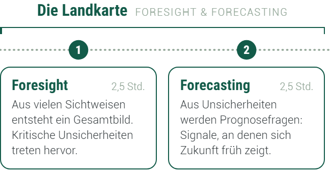
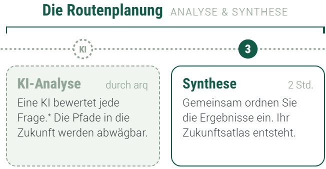
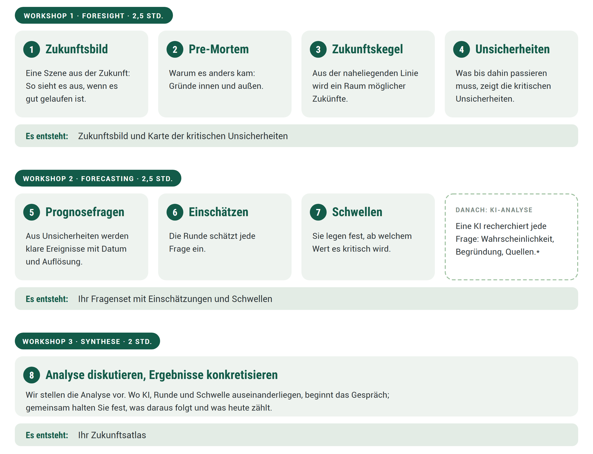
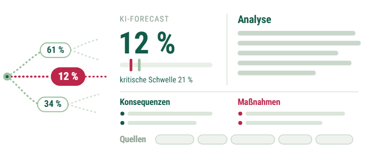
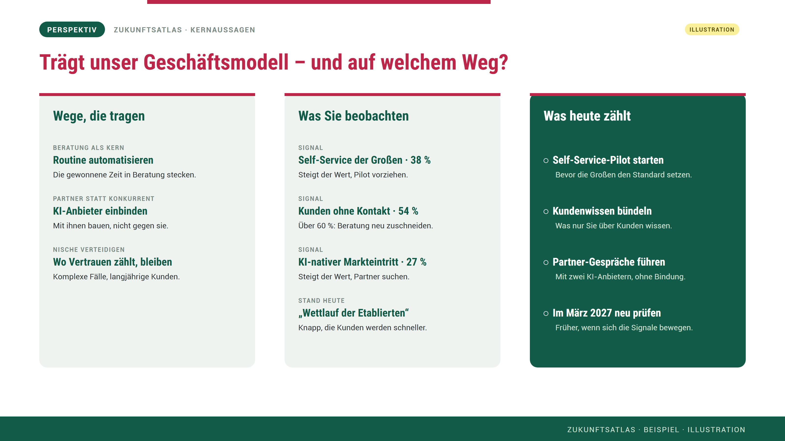
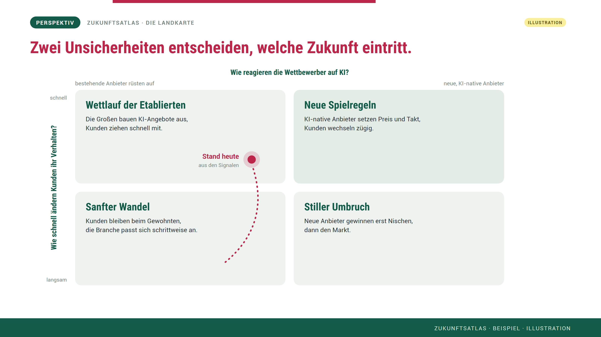
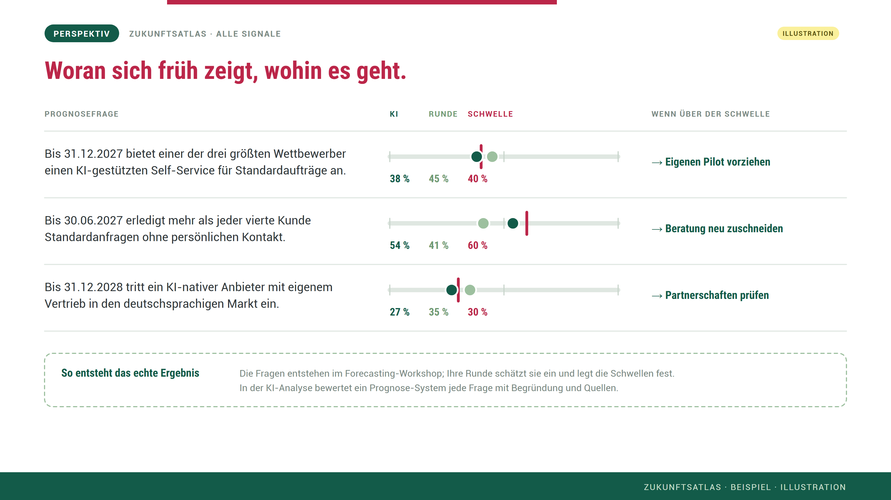

Ihr Zukunftsatlas
Status quo: wo Sie heute stehen
Jeder Pfad analysiert: mit Argumentation und Quellen
Wege in die Zukunft: was sich abzeichnet und warum
In drei Workshops wird aus den Sichten Ihrer Runde ein Zukunftsbild, aus den kritischen Unsicherheiten werden Prognosefragen, und eine KI bewertet jede Frage. Das Ergebnis ist Ihr Zukunftsatlas: wo Sie heute stehen, welche Wege offen sind und was heute zählt.
Perspektiv · Ergebnis nach zwei Wochen · 3 Termine · bis zu 8 Personen
Ein Perspektiv ist ein kleines Fernrohr. Wer in unübersichtlichem Gelände steht, verschafft sich damit rasch einen Überblick: Seine Linsen bündeln das Licht zu einem klaren Bild – so wie das Perspektiv viele Sichtweisen zu einem gemeinsamen Blick bündelt.
Drei Workshops mit Ihnen, dazwischen die Analyse durch arq. Vorab klären wir in 30 Minuten den Anlass. Sie benennen bis zu acht Teilnehmende und eine Ansprechperson, gemeinsam stimmen wir die drei Termine ab. Das Ergebnis liegt nach zwei Wochen vor.


Im Foresight-Workshop arbeitet sich Ihre Runde in vier Schritten vom Zukunftsbild zu den kritischen Unsicherheiten vor. Im Forecasting-Workshop werden daraus Prognosefragen, die Sie einschätzen und mit einer Schwelle versehen. Danach recherchiert eine KI jede Frage. In der Synthese wird diese Analyse diskutiert, und die Ergebnisse werden konkretisiert: Am Ende steht Ihr Zukunftsatlas.
* Ein Prognose-System, das öffentliche Turniere anführt und auf offenen Benchmarks über dem Median menschlicher Superforecaster liegt, fachgebietsunabhängig, mit Argumentation und Quellen.

Status quo: wo Sie heute stehen
Jeder Pfad analysiert: mit Argumentation und Quellen
Wege in die Zukunft: was sich abzeichnet und warum

Der Zukunftsatlas führt die Sichten Ihrer Runde, die Einschätzungen der KI und ihre Begründungen zusammen: Kernaussagen, Landkarte, alle Signale, eine Seite je Frage mit Analyse und Quellen, und was heute zählt. Man schlägt darin nach, statt ihn abzuheften.
Die drei Seiten unten stammen aus einem frei erfundenen Beispiel zur Frage, ob ein Geschäftsmodell trägt, wenn KI Kunden und Wettbewerb verändert.

Das Wichtigste auf einer Seite: Wege, die tragen, was Sie beobachten und was heute zählt.

Zwei offene Fragen spannen vier Zukünfte auf. Der Punkt zeigt, wohin die Signale heute weisen.

Jede Prognosefrage mit der Einschätzung der KI, Ihrer Runde und der Schwelle, ab der es kritisch wird.
Beschreiben Sie es uns in zwei Sätzen. Wir schlüsseln es für Sie auf, mit einer beispielhaften Landkarte möglicher Zukünfte.
Im Gespräch klären wir, welche Fragen für Ihre Organisation entscheidend sind und ob das Perspektiv der passende Einstieg ist. Onepager und Konditionen senden wir Ihnen im Anschluss.